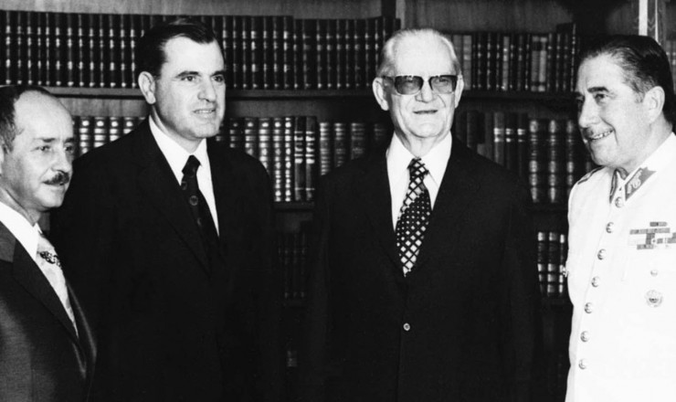

Ernesto Geisel tinha um plano de transformar o Brasil em uma democracia novamente. Ele dizia ser uma “abertura lenta, gradual e segura”.
O AI-5 acabou devido ao Geisel querer diminuir a censura, pois as torturas e mortes estavam dando uma má imagem internacional ao Brasil. Uns dos outros motivos foram a censura ter ficado insustentável, e a pressão social para a volta da democracia só estava crescendo.
